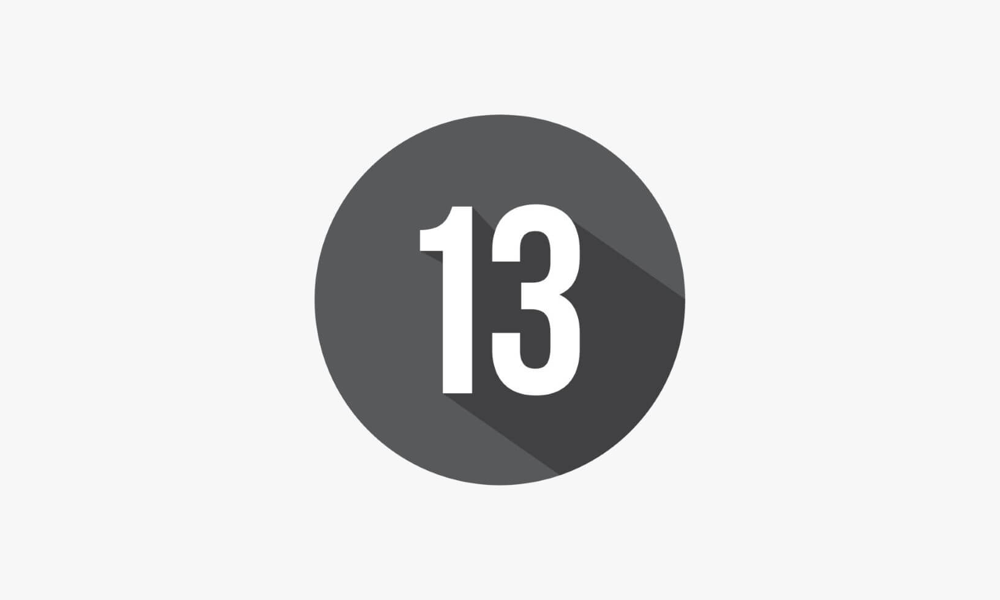

Acción de desburocratización y automatización de dependencias del Ministerio de Gobierno
Estado Digital 1 - Antecedentes PolicialesRápida, simple y segura solución para la emisión del Certificado Único de Antecedentes Policiales.Reduce el tiempo de trámite de emisión de pasaportes para ciudadanos bolivianos, y el trámite de permanencia para ciudadanos extranjeros.Estado Digital 3 - Vidrios RaybanRegular los requisitos y procedimientos para la autorización especial de uso de vidrios oscurecidos y polarizados en vehículos oficiales y particulares.Estado Digital 4 - Régimen PenitenciarioContar en tiempo real con datos completos los privados de libertad en el territorio nacional.Estado Digital 5 - Empresa de Seguridad PrivadaInformación detallada de las empresas de Seguridad y Vigilancia Privada autorizadas en el país.Estado Digital 6 - Sistema de Gestión y Control de Sustancias Químicas ControladasRegistrar Sustancias Químicas Controladas, para agilizar y facilitar los trámites y procedimientos ante la Dirección General de Sustancias Controladas, permitiendo su interoperabilidad con las oficinas Distritales, Regionales y puestos móviles.Estado Digital - Mi IdentidadAdquirir la cédula de identidad y licencia de conducir digital.Estado Digital 8 - UNIPOL - Sistema de Admisiones a Postulantes a Academias PolicialesRealizar el control de canje de prospectos ANAPOL y FATESCIPOL, inscripción de postulantes, registro de evaluaciones MEDICA, FISICA, CONOCIMIENTOS y proceso de calificación en la evaluación PSICOMETRICA; donde el postulante puede realizar un seguimiento a los resultados obtenidos en las distintas evaluaciones.Estado Digital 9 - Migración - Trámites MigratoriosRealizar la gestión de trámites migratorios de manera virtual, mediante una plataforma, más fluida y veloz, para mejorar la atención al público en general.Emisión de documentos personales (Cédulas de Identidad y Licencias de Conducir) duplicados.Estado Digital - Sistema de Emisión de Multas ElectrónicasRealizar la emisión de multas electrónicas y el pago en línea para público en general. Las nuevas boletas electrónicas por concepto de infracciones de tránsito, son emitidas por personal policial designado, a través de dispositivos autorizados.Estado Digital - DIRCABI - Sistema Informático Integrado de BienesProporcionar información de los bienes secuestrados, incautados, confiscados, de bienes objeto de Pérdida de Dominio y cuyo dominio haya sido declarado a favor del Estado, en procesos relacionados al tráfico ilícito de sustancias controladas, proporcionada por el Órgano Judicial, Ministerio Público, la Policía Boliviana y DIRCABI. Este sistema será administrado por la DIRCABI

Estado Digital - DIPROVE - Sistema de TránsitoDigitalización de emisión de certificados de tránsito en línea. Puede realizar los 8 trámites disponibles: Inscripción Nueva, Transferencia, Certificado de Autenticidad, Extravío de Placa, Cambio de Color, Cambio de Motor, Cambio de Estructura, Revenido Químico y Térmico.Estado Digital - Tarjeta de Identificación de Conductor TICAdquiere tu Tarjeta de Identificación de Conductor (TIC) de forma rapida y segura.Estado Digital - Alerta JulianaSistema de Emergencia Rápida para la Difusión de Notificaciones de Niñas, Niños y Adolescentes Desaparecidos, hace partícipe en su búsqueda a la población.El sistema de registro de portación y tenencia de armas de fuego para personas civiles permitirá el Registro de las características de las armas de fuego, además del registro de las personas civiles que estén en posesión de las mismas, de esta manera se tendrá un control de las personas y armas que se encuentran en poder de personal civil en nuestro país.